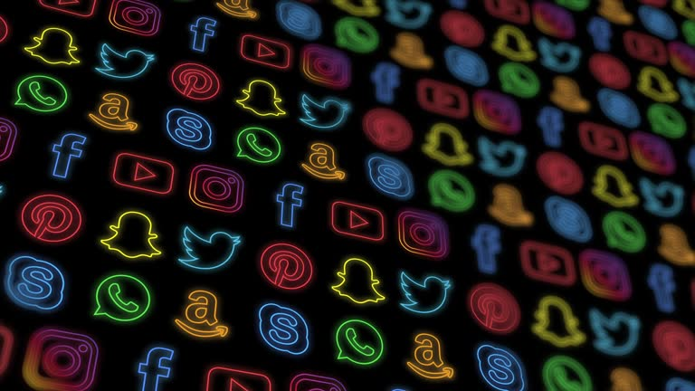
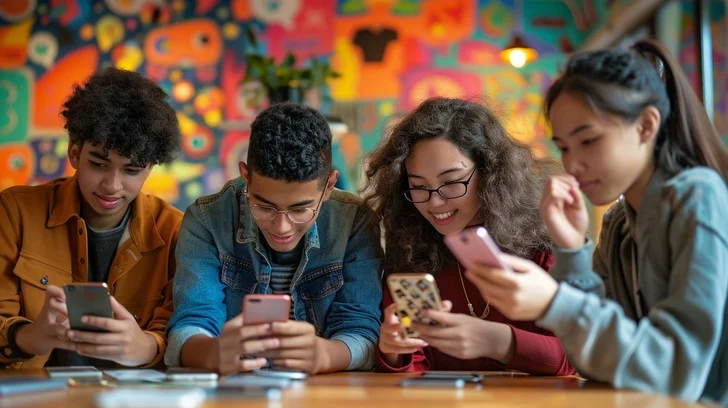
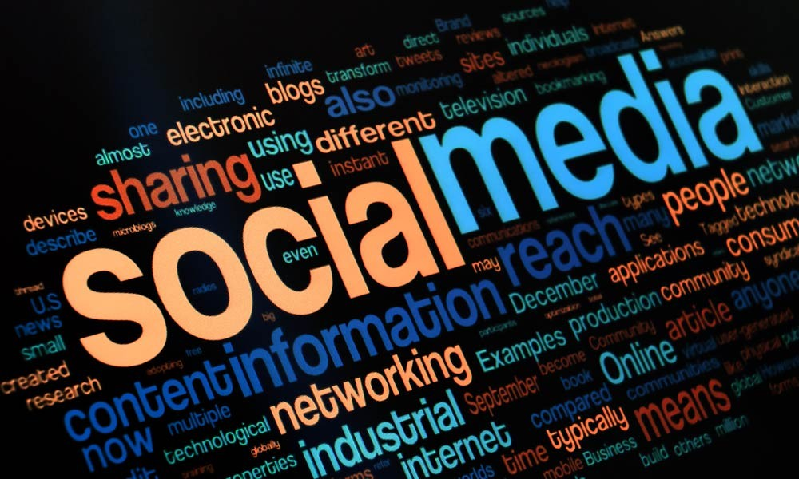

Over the past 20 years, the way people communicate has changed a lot. Social media, messaging apps, and video calls have made it easier to stay in touch, but they have also changed how teenagers interact with each other. These platforms have become a big part of daily life, affecting friendships, emotions, and even self-esteem.
This report looks at how digital communication has influenced teenagers—both in good and bad ways. It compares online communication to real-life conversations and explores the long-term effects of relying so much on technology.
Digital communication means talking or sharing information using phones, computers, and the internet. It started becoming popular in the late 1900s, but it really became a huge part of life in the early 2000s when websites like Facebook (2004) and Twitter (2006) were created. Later, apps like WhatsApp (2009) and Instagram (2010) made chatting and sharing pictures even easier. Today, platforms like TikTok (2016) and Threads (2023) are some of the most popular among teenagers.
Before social media, people mostly talked in person—at school, in parks, at family gatherings, or while doing activities together. These face-to-face conversations helped build stronger friendships. Now, most teenagers connect through texting and social media. While this is faster and more convenient, it also means fewer real-life interactions, which can make conversations feel less personal. Without body language and eye contact, online communication sometimes lacks emotion and meaning.
One of the biggest problems with digital communication is that it has reduced face-to-face conversations. Many teenagers prefer texting over talking in real life, which can make it harder for them to develop strong social skills. Studies show that too much screen time can make it difficult to read facial expressions and body language, which are important for building relationships.
Another common issue is ghosting, where someone suddenly stops responding to messages. This has become normal in online friendships, but it can cause hurt feelings and misunderstandings.
Social media can also affect teenager's self-esteem. Many young people feel FOMO (Fear of Missing Out) when they see their friends hanging out without them. This can make them feel left out and lonely.
Another problem is comparison. Teenagers often compare themselves to influencers and celebrities who use filters and editing apps to look “perfect.” This can make young people feel insecure about their appearance. Studies have found that social media can lower self-confidence, especially among teenage girls. However, some influencers, like Clara Dao, promote self-love and body positivity, which helps some people feel better about themselves.
Apart from self-esteem issues, the internet also exposes teenagers to cyberbullying and inappropriate content. Many young people experience online harassment, which can lead to anxiety and depression. Some are also exposed to explicit content or even online predators, which can cause emotional trauma. In extreme cases, cyberbullying and online pressure have even contributed to rising suicide rates among teenagers.
On the other hand, digital communication isn't always negative. Many teenagers find comfort in online communities where they can talk about their problems without needing to visit a therapist. This is especially helpful for autistic or disabled teenagers, who might find online communication easier than in-person conversations. For example, Elise Ecklund, a musician with Moebius Syndrome (sometimes called “sad face syndrome”), has gained popularity and inspired others through her music.
Despite its problems, digital communication has made life more convenient. In the past, people had to meet in person to stay close to friends. Now, teenagers can stay connected instantly, no matter where they are. This has helped them build friendships across different places and keep in touch more easily.
Social media has also helped spread awareness about important topics like mental health, disabilities, and social issues. Many teenagers use these platforms to learn about the world and share their opinions, helping to create a more inclusive society.
However, online communication still lacks important parts of real conversations, like body language and tone of voice. Text messages can easily be misunderstood, and even small things like emojis can cause confusion. Ghosting and online arguments have also created new social pressures that didn't exist before.
Digital communication has completely changed the way teenagers interact with each other. While it has made staying in touch easier, it has also created challenges like anxiety, low self-esteem, and weaker social skills. Many teenagers feel overwhelmed by social pressure and the unrealistic standards they see on social media. Spending too much time online can lead to loneliness, cyberbullying, and difficulties forming real-life relationships.
However, technology is here to stay, and digital communication isn't going away. The key is for teenagers to find a balance between online and offline interactions. If they can use digital platforms wisely while still making time for real-life connections, they can enjoy the benefits of technology without it negatively affecting their well-being.